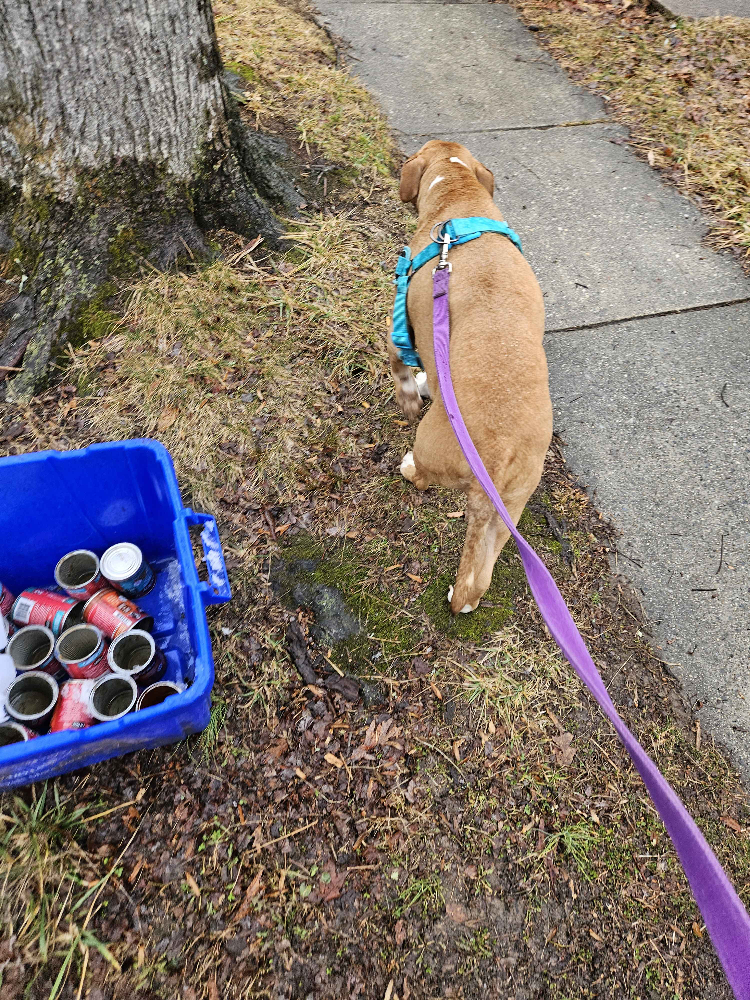
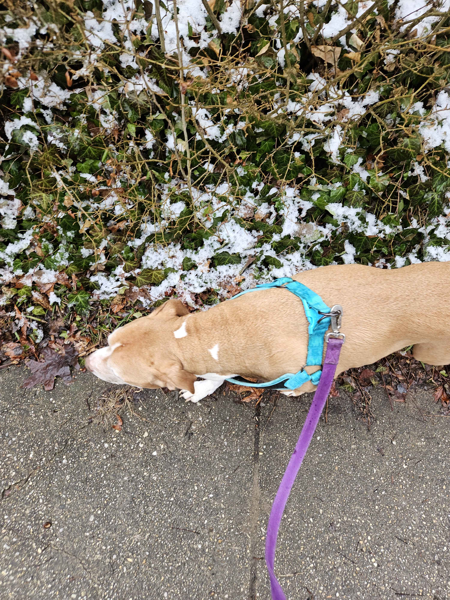
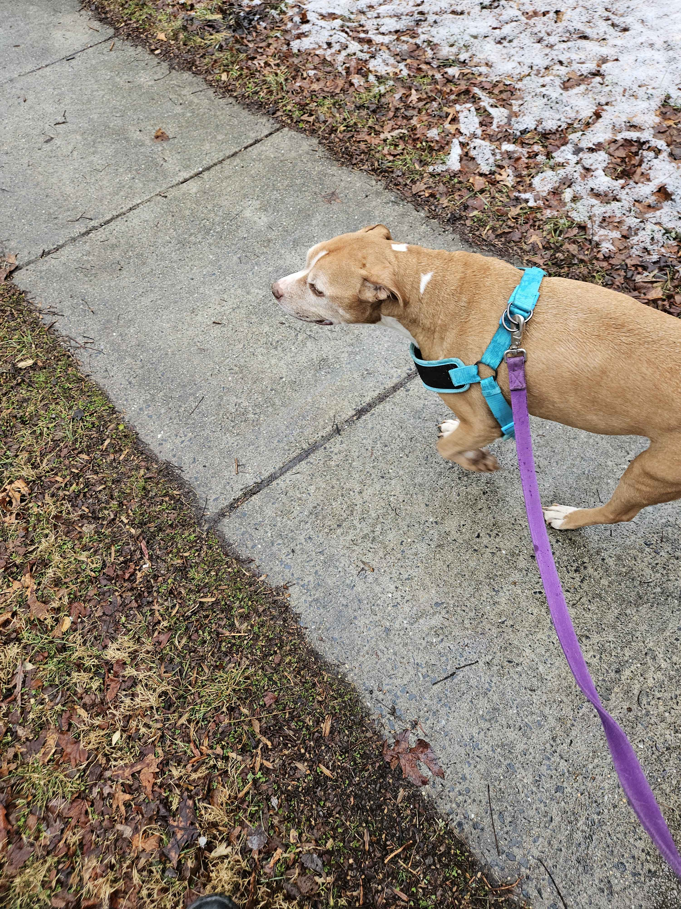

Muncaster's Memorial
Muncaster Klein was my Pirate Prince and my best buddy and "The Goodest of Boys™". A sweet, goofy dog, he was never once aggressive, and he loved everyone. We got him starting in 2014, and he was already at least a year old. The animal shelter we got him from found him tied up to a lamppost on nearby Muncaster Mill Road, so they named him Muncaster. We just called him Munc most of the time. At first he was a wild boy, but he grew into being such a calm, kind, intelligent dog who really was a guide to me, and an amazing emotional support dog.
Still Photos of Muncaster on his Last Day



An audio recording of Muncaster's sending off:
This is a recording of me performing Muncaster's sending off across the Rainbow Bridge. I am adding this because the audio itself is very hard to hear, and I can understand why some people wouldn't want to actually see the burial itself, but I want this to be available for the widest audience possible.
I held him on March 3rd of 2026 at the veterinary hospital as he was granted his final rest. I took his empty husk back to a now less inhabited home so his two sisters, Flake and Nova, could sniff it to aid with their grieving process. I dug his grave myself, and I laid him to rest inside it with his personal pillow under his head (a gift from our mom to him), the socks I wore by his nose (for the comfort of "Alexa smells" for his journey, my gift to him), and an old rope bone he had played with and torn some (a gift from both our mom and I together to him) right by him. I filled his grave in and patted it down. Mom stepped on it too (her way of contributing to Muncaster as best she could then). I recorded his sending off ceremony, and then went back in to grieve with my own pups and start getting our own lives back to some semblance of normalcy. Munc is missed, but not gone, and he is always here with us and loved by us.
A Video Recording of Muncaster's Sending Off:
This video shows Muncaster's empty husk being placed in its grave. If you cannot currently watch that, for whatever reason, please- don't make things worse for yourself or feel bad about it in anyway! I understand completely, alright? Besides... Muncaster would want me to spread loving and tail wags- not mean barking and bites!!!